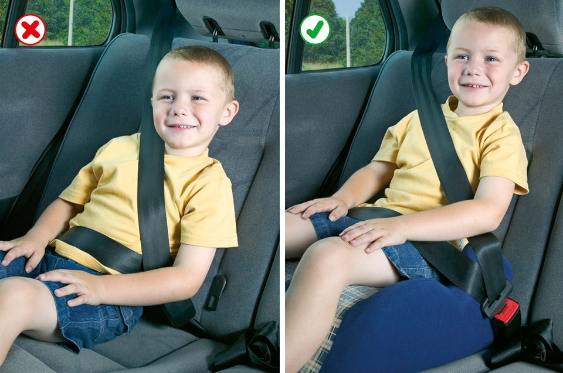

Rules for drivers and motorcyclists (89 to 102)
- Vehicle condition (89)
- Fitness to drive (90 to 94)
- Alcohol and drugs (95 to 96)
- Before setting off (97)
- Vehicle towing and loading (98)
- Seat belts and child restraints (99 to 102)
6. Seat belts and child restraints (99 to 102)
99
You MUST wear a seat belt in cars, vans and other goods vehicles if one is fitted (see table below). Adults, and children aged 14 years and over, MUST use a seat belt or child restraint, where fitted, when seated in minibuses, buses and coaches. Exemptions are allowed for the holders of medical exemption certificates and those making deliveries or collections in goods vehicles when travelling less than 50 metres (approx 162 feet).
Laws RTA 1988 sects 14 & 15, MV(WSB)R, MV(WSBCFS)R & MV(WSB)(A)R
Seat Belt Requirements. This table summarises the main legal requirements for wearing seat belts in cars, vans and other goods vehicles.
You MUST wear a seat belt in cars, vans and other goods vehicles if one is fitted (see table below). Adults, and children aged 14 years and over, MUST use a seat belt or child restraint, where fitted, when seated in minibuses, buses and coaches. Exemptions are allowed for the holders of medical exemption certificates and those making deliveries or collections in goods vehicles when travelling less than 50 metres (approx 162 feet).
Laws RTA 1988 sects 14 & 15, MV(WSB)R, MV(WSBCFS)R & MV(WSB)(A)R
Seat Belt Requirements. This table summarises the main legal requirements for wearing seat belts in cars, vans and other goods vehicles.
| Front seat | Rear seat | Who is responsible? | |
|---|---|---|---|
| Driver | Seat belt MUSTbe worn if fitted | - | Driver |
| Child under 3 years of age | Correct child restraint MUSTbe used | Correct child restraint MUST be used. If one is not available in a taxi, may travel unrestrained. | Driver |
| Child from 3rd birthday up to 1.35 metres in height (or 12th birthday, whichever they reach first) | Correct child restraint MUSTbe used | Correct child restraint MUST be used where seat belts fitted. MUST use adult belt if correct child restraint is not available in a licensed taxi or private hire vehicle, or for reasons of unexpected necessity over a short distance, or if two occupied restraints prevent fitment of a third. | Driver |
| Child over 1.35 metres (approx 4ft 5ins) in height or 12 or 13 years | Seat belt MUSTbe worn if available | Seat belt MUST be worn if available | Driver |
| Adult passengers aged 14 and over | Seat belt MUSTbe worn if available | Seat belt MUST be worn if available | Passenger |
100
The driver MUST ensure that all children under 14 years of age in cars, vans and other goods vehicles wear seat belts or sit in an approved child restraint where required (see table above). If a child is under 1.35 metres (approx 4 feet 5 inches) tall, a baby seat, child seat, booster seat or booster cushion MUST be used suitable for the child’s weight and fitted to the manufacturer’s instructions.
Laws RTA 1988 sects 14 & 15, MV(WSB)R, MV(WSBCFS)R & MV(WSB)(A)R
The driver MUST ensure that all children under 14 years of age in cars, vans and other goods vehicles wear seat belts or sit in an approved child restraint where required (see table above). If a child is under 1.35 metres (approx 4 feet 5 inches) tall, a baby seat, child seat, booster seat or booster cushion MUST be used suitable for the child’s weight and fitted to the manufacturer’s instructions.
Laws RTA 1988 sects 14 & 15, MV(WSB)R, MV(WSBCFS)R & MV(WSB)(A)R

Rule 100: Make sure that a child uses a suitable restraint which is correctly adjusted
101
A rear-facing baby seat MUST NOT be fitted into a seat protected by an active frontal airbag, as in a crash it can cause serious injury or death to the child.
Laws RTA 1988 sects 14 & 15, MV(WSB)R, MV(WSBCFS)R & MV(WSB)(A)R
A rear-facing baby seat MUST NOT be fitted into a seat protected by an active frontal airbag, as in a crash it can cause serious injury or death to the child.
Laws RTA 1988 sects 14 & 15, MV(WSB)R, MV(WSBCFS)R & MV(WSB)(A)R
102
Children in cars, vans and other goods vehicles. Drivers who are carrying children in cars, vans and other goods vehicles should also ensure that
Children in cars, vans and other goods vehicles. Drivers who are carrying children in cars, vans and other goods vehicles should also ensure that
- children should get into the vehicle through the door nearest the kerb
- child restraints are properly fitted to manufacturer’s instructions
- children do not sit behind the rear seats in an estate car or hatchback, unless a special child seat has been fitted
- the child safety door locks, where fitted, are used when children are in the vehicle
- children are kept under control.